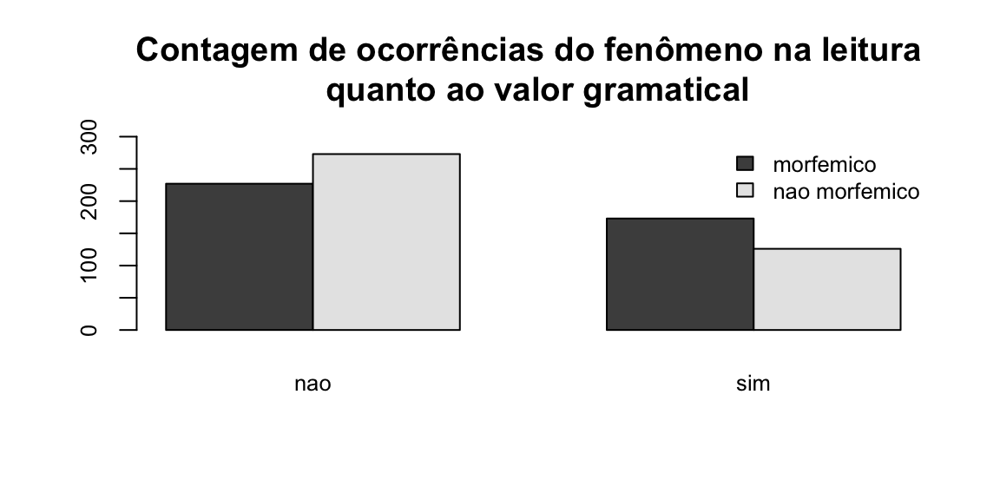
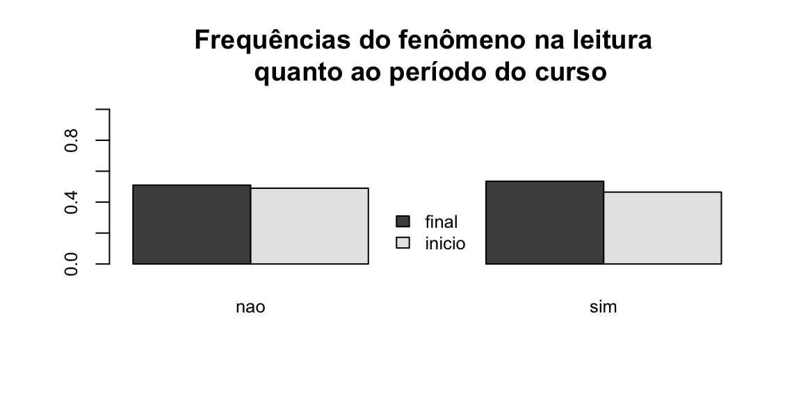
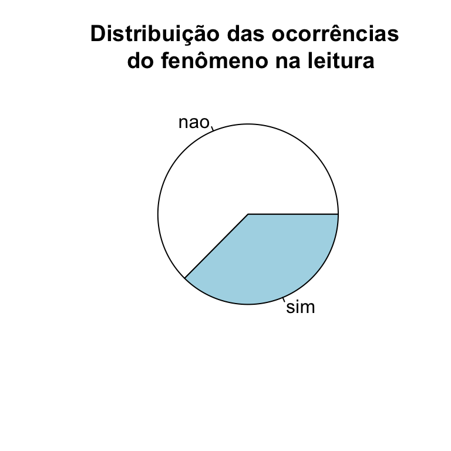
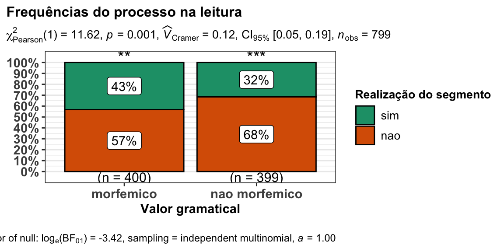
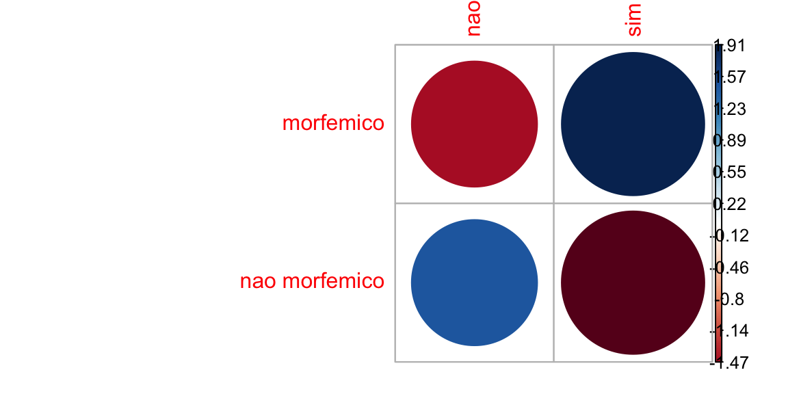
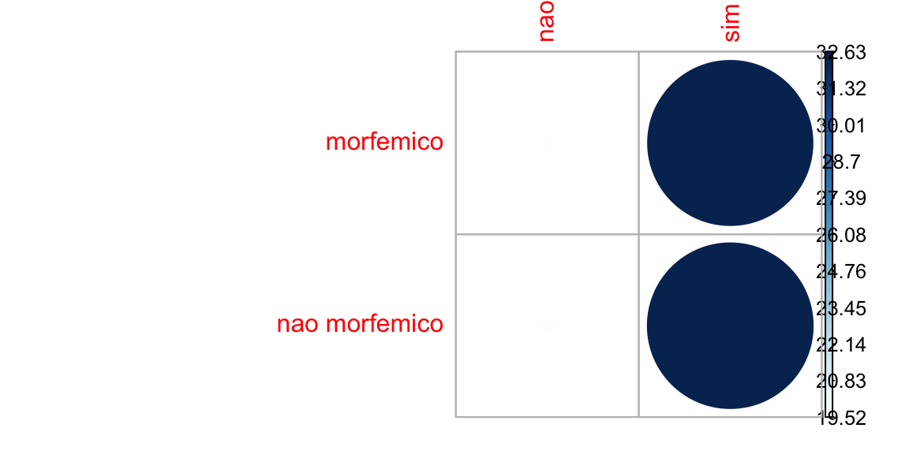
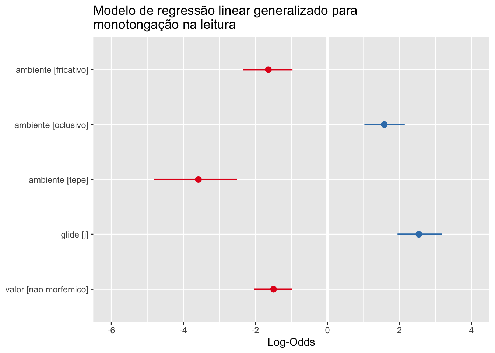

Crie um novo projeto no RStudio e coloque na pasta o arquivo
monotonga.csv. Crie umscriptdo Rstudio para registrar a sua análise. Com esse procedimento, não será necessário ficar mudando de diretório. E você pode voltar os passos caso tenha dificuldade com um comando. Este símbolo#significa que oscriptnão irá ler o que está na sequência; utilize para inserir comentários sobre sua análise.
Neste tutorial, utilizaremos uma amostra do conjunto de dados que foi explorado no artigo Da fala à leitura: variação linguística na leitura em voz altade estudantes da Universidade Federal de Sergipe (Souza, Silva e Araujo Jr., 2020), considerando apenas um fenômeno fonológico, a monotongação.
O conjunto de dados em questão se refere ao processo fonológico de monotongação na leitura. Esta subamostra foi utilizada em um estudo sobre reparos em leitura (Freitag, 2020). Por isso, o número de observações é diferente, com resultados diferentes.
dados <- read.table("monotonga.csv", header = T, sep = ";", stringsAsFactors = TRUE)
### estamos importando os dados da planilha intitulada "monotonga.csv", informando que a primeira linha é a dos título (header) e que o separador da planilha é ";")Utilize a função head() para inspecionar as seis ocorrências:
head(dados)
#> item realizacao correcao valor classe sexo participante
#> 1 ouviu nao nao morfemico verbo feminino 03F20
#> 2 poupava nao nao morfemico verbo feminino 03F20
#> 3 entrou nao nao morfemico verbo feminino 03F20
#> 4 pouco nao nao nao morfemico nao verbo feminino 03F20
#> 5 passageira nao nao nao morfemico nao verbo feminino 03F20
#> 6 beijava nao nao morfemico verbo feminino 03F20
#> periodo
#> 1 inicio
#> 2 inicio
#> 3 inicio
#> 4 inicio
#> 5 inicio
#> 6 inicioObserve a estrutura de dados com a função str().
str(dados)
#> 'data.frame': 799 obs. of 8 variables:
#> $ item : Factor w/ 16 levels "acompanhou","apaixonadamente",..: 11 14 9 13 12 3 2 6 5 15 ...
#> $ realizacao : Factor w/ 2 levels "nao","sim": 1 1 1 1 1 1 1 2 1 1 ...
#> $ correcao : Factor w/ 2 levels "nao","sim": 1 1 1 1 1 1 1 1 1 1 ...
#> $ valor : Factor w/ 2 levels "morfemico","nao morfemico": 1 1 1 2 2 1 2 2 1 2 ...
#> $ classe : Factor w/ 2 levels "nao verbo","verbo": 2 2 2 1 1 2 1 1 2 1 ...
#> $ sexo : Factor w/ 2 levels "feminino","masculino": 1 1 1 1 1 1 1 1 1 1 ...
#> $ participante: Factor w/ 50 levels "03F20","04F18",..: 1 1 1 1 1 1 1 1 1 1 ...
#> $ periodo : Factor w/ 2 levels "final","inicio": 2 2 2 2 2 2 2 2 2 2 ...Vamos eleger como variável dependente realizacao, que tem dois níveis: sim (ocorre ditongo) ou nao (não ocorre ocorre o ditongo, havendo monotongação). A partir desta variável dependente, realizaremos análises univariadas com as variáveis independentes.
Primeiramente iremos realizar procedimentos de estatística descritiva, para descrever as frequências observadas. Depois, iremos realizar os procedimentos de estatística inferencial, para testar associação entre as variáveis.
As medidas de descrição de um conjunto de dados composto por variáveis categóricas são contagens e frequências.
table(dados$realizacao) ### tabela para a contagem de ocorrências da VD
#>
#> nao sim
#> 500 299
prop.table(table(dados$realizacao)) ### proporção da contagem de ocorrências da VD
#>
#> nao sim
#> 0.6257822 0.3742178
prop.table(table(dados$realizacao))*100 ### frequência da contagem de ocorrências da VD (%)
#>
#> nao sim
#> 62.57822 37.42178
round(prop.table(table(dados$realizacao))*100, 2) ### frequência em % arredondada em 2 casas decimais
#>
#> nao sim
#> 62.58 37.42Queremos saber agora verificar a distribuição das observações em função das variáveis independentes. A tabela de contingência é a tabela que calcula observações por múltiplas variáveis categóricas. As linhas e colunas das tabelas correspondem a variáveis categóricas.
O procedimento é o mesmo realizado anteriormente para a contagem de ocorrências, com as funções table, prop.table e round: a variável dependente é a primeira a ser informada, em seguida, a variável independente.
Vamos calcular a tabela de contingência da VI valor:
table(dados$realizacao, dados$valor) ### tabela para a contagem de ocorrências da VD em função da VI
#>
#> morfemico nao morfemico
#> nao 227 273
#> sim 173 126
addmargins(table(dados$valor, dados$realizacao)) ### soma dos totais por linha e por coluna
#>
#> nao sim Sum
#> morfemico 227 173 400
#> nao morfemico 273 126 399
#> Sum 500 299 799
prop.table(table(dados$valor, dados$realizacao), 1) ### proporção da contagem de ocorrências da VI em função da VD.
#>
#> nao sim
#> morfemico 0.5675000 0.4325000
#> nao morfemico 0.6842105 0.3157895
prop.table(table(dados$valor, dados$realizacao), 1)*100 ### frequência da contagem de ocorrências da VD (%)
#>
#> nao sim
#> morfemico 56.75000 43.25000
#> nao morfemico 68.42105 31.57895
round(prop.table(table(dados$valor, dados$realizacao), 1)*100, 2)### frequência em % arredondada em 2 casas decimais
#>
#> nao sim
#> morfemico 56.75 43.25
#> nao morfemico 68.42 31.58Podemos visualizar os dados na forma de um gráfico. O objetivo deste tutorial não é a visualização gráfica (teremos um tutorial específico para isso); veremos apenas uma forma de visualização simples por meio de gráfico de barras de contagens e de frequências barplot():
O primeiro gráfico é o de contagens de ocorrências da variável valor:
barplot(table(dados$valor, dados$realizacao), ### informe a tabela que será visualizada
beside = TRUE, ### Barras lado a lado
legend = TRUE,
main = "Contagem de ocorrências do fenômeno na leitura \n quanto ao valor gramatical",
ylim = c(0, 300), ### Ajustar o eixo y para o máximo de ocorrências
cex.names = 0.8, ### Tamanho do texto das colunas
cex.axis = 0.8, ### tamanho do texto dos eixos
args.legend = list(x = "topright", ### Posição da legenda
cex = 0.8, ### Tamanho do texto da legenda
bty = "n"))
E o segundo gráfico é o de frequências da variável periodo do curso:
barplot(prop.table(table(dados$periodo, dados$realizacao), 2), ### informe a tabela que será visualizada
beside = TRUE, ### Barras lado a lado
legend = TRUE,
main = "Frequências do fenômeno na leitura \n quanto ao período do curso",
ylim = c(0, 1), ### Ajustar o eixo y para o máximo de ocorrências
cex.names = 0.8, ### Tamanho do texto das colunas
cex.axis = 0.8, ### tamanho do texto dos eixos
args.legend = list(x = "bottom", ### Posição da legenda
cex = 0.8, ### Tamanho do texto da legenda
bty = "n"))
Cadê a pizza????
Embora faça muito sucesso,gráfico de pizza não é a melhor forma de dispor dados, pois não possibilita comparação entre variáveis. Mas, mesmo assim, para apresentar a distribuição geral da variável dependente, é uma forma muito usada.
pie(table(dados$realizacao), main = "Distribuição das ocorrências \n do fenômeno na leitura")
Agora que já inspecionamos a contagem de ocorrências e as frequências, vamos ao teste de hipóteses com estatística inferencial para variáveis categóricas.
Vamos agora testar hipóteses para as distribuições da variável dependente em função das variáveis independentes.
Existem hipóteses que consideram conhecimentos do funcionamento linguístico do processo fonológico de monotongação:
E existem hipóteses que consideram conhecimentos da comunidade:
Relembrando: (Se estiver com dúvida, volte para Teste de hipótese
A premissa de testes estatísticos é que o resultado não é diferente do acaso. É o que chamamos de hipótese nula H0
Isso significa que assumimos sempre que a distribuição entre dois grupos não é diferente, ou que não há associação entre duas variáveis.
Quando a hipótese nula não é validada, apresentamos a hipótese alternativa H1 , isso significa que há uma diferença entre grupos ou associação entre variáveis.
Nosso limite para aceitação da hipótese é α = 0.05 (p-valor).
Para todas as perguntas acima, assumimos a H0; em não aceitando a H0, propomos nossa H1, com base nos conhecimentos anteriores.
Os testes estatísticos verificam a probabilidade de as diferenças encontradas serem devidas ao acaso, partindo do pressuposto que, na verdade, não existem diferenças na população:
Com os procedimentos de estatística descritiva, observamos que há uma diferença de distribuição da variável dependente entre os níveis da variável independente.
Para verificar se esta distribuição observada é signficativamente diferente da esperada, realizamos o teste de qui-quadrado de Pearson (χ2), com a função chisq.test.
O ponto de partida é uma tabela de contingência. Vamos realizar o teste para VI valor gramatical e VD realizacao.
Nossas hipóteses: + H0: são independentes (não são associadas) + H1: não são independentes (são associadas)
chisq.test(dados$valor, dados$realizacao)
#>
#> Pearson's Chi-squared test with Yates' continuity correction
#>
#> data: dados$valor and dados$realizacao
#> X-squared = 11.126, df = 1, p-value = 0.0008514O resultado do teste é de que com α = 0.05, falhamos em rejeitar a H0, e as variáveis não são independentes.
Pressupostos para o teste de qui-quadrado: - Funciona bem para tabela cruzada 2 x 2 - Em tabelas n x n, depende do equilíbrio entre os fatores - Não funciona com zeros ou com baixa recorrência - Compara apenas amostras independentes
Quando há menos de 20 observações na amostra, ou menos de 5 contagens em uma célula, o teste exato de Fisher é indicado: fisher.test().
Faça o teste Fisher para a variável utilizando a função fisher.test()
Agora que já sabemos quais variáveis tem associação, ou seja, não são independentes, precisamos ver a intensidade dessa associação.
A partir da estatística do teste de qui-quadrado, três medidas de intensidade de associação podem ser calculadas: ϕ (phi), V2 de Crámer e coeficiente de contingência.
ϕ: somente em tabelas de contingência 2 x 2 e os resultados vão de -1 (associação negativa) a 1 (1 associação positiva);
V2 de Crámer: tabelas de contingência n x n e os resultados vão de 0 (ausência de associação) a 1 (associação muito forte);
Coeficiente de contingência: somente em tabelas 2 x 2 e os resultados vão de 0 (ausência de associação) a 1 (associação muito forte).
Com o conjunto de dados que estamos trabalhando, os três procedimentos podem ser realizados. Vamos utilizar uma função que sumariza os testes de associação para uma tabela de contingência, assocstats, do pacote vcd (este teste requer que a tabela esteja em um objeto).
library(vcd) ### carregar o pacote
#> Loading required package: grid
valor <- table(dados$valor, dados$realizacao) ### criar o objeto
assocstats(valor) ### aplicar ao objeto a função
#> X^2 df P(> X^2)
#> Likelihood Ratio 11.655 1 0.00064015
#> Pearson 11.619 1 0.00065291
#>
#> Phi-Coefficient : 0.121
#> Contingency Coeff.: 0.12
#> Cramer's V : 0.121Esta função realiza o teste de qui-quadrado (sem correção, por isso há uma pequena diferença em relação ao que foi calculado anteriormente) e calcula as estatísticas de associação possíveis.
Aogra que já sabemos o resultado, vamos reportá-lo. Para variáveis categóricas, apresentamos a contagem e a frequência e o resultado dos testes de independência e associação.
Podemos transpor as tabelas e os cálculos para o texto do relatório (resumo, artigo, dissertacão, tese). Um dos pontos negativos evocados para o não uso do R é que a apresentação gráfica dos resultados não é boa e que a realização dos testes exige muitos procedimentos. Existe um movimento dos usuários do R chamado EasyStats, com pacotes de funções que facilitam a rotina de procedimentos. Vamos usar alguns deles para ver as possibilidades.
Para produzir tabelas, já com contagens, frequências e resultados de testes inferências, o pacote sjPlot é uma boa opção.
library(sjPlot) ### carregar o pacote
#> #refugeeswelcome
sjt.xtab(
dados$valor, dados$realizacao, ### tabela de contingência
show.row.prc = TRUE, ### solicitamos que os resultados sejam apresentados em frequências
show.summary = TRUE, ### solicitamos o sumário dos testes inferenciais
statistics = "cramer", ### informamos qual o teste solicitado; se esta linha for retirada, o pacote seleciona automaticamente um teste
)| valor | realizacao | Total | |
|---|---|---|---|
| nao | sim | ||
| morfemico |
227 56.8 % |
173 43.2 % |
400 100 % |
| nao morfemico |
273 68.4 % |
126 31.6 % |
399 100 % |
| Total |
500 62.6 % |
299 37.4 % |
799 100 % |
χ2=11.126 · df=1 · Cramer’s V=0.121 · p=0.001 |
Basta copiar e colar, ou salvar a tabela já em formato *.doc. Se não quiser os testes estatísticos, basta retirar a linha show.summary do comando.
A visualização gráfica pode ser realizada pelo pacote ggstatsplot. A sintaxe do comando é simples:
library(ggstatsplot) ### carregar o pacote
#> Registered S3 methods overwritten by 'broom.mixed':
#> method from
#> augment.lme broom
#> augment.merMod broom
#> glance.lme broom
#> glance.merMod broom
#> glance.stanreg broom
#> tidy.brmsfit broom
#> tidy.gamlss broom
#> tidy.lme broom
#> tidy.merMod broom
#> tidy.rjags broom
#> tidy.stanfit broom
#> tidy.stanreg broom
#> Registered S3 methods overwritten by 'car':
#> method from
#> influence.merMod lme4
#> cooks.distance.influence.merMod lme4
#> dfbeta.influence.merMod lme4
#> dfbetas.influence.merMod lme4
ggstatsplot::ggbarstats(
data = dados, ### informe o nome do arquivo dos dados
x = realizacao, ### informe a variável dependente
y = valor, ### informe a variável independente
title = "Frequências do processo na leitura", ### edite o título
xlab = "Valor gramatical", ### edite o nome do eixo da variável indepentente
legend.title = "Realização do segmento" ## Edite o nome da variável dependente
)
#> Note: 95% CI for effect size estimate was computed with 100 bootstrap samples.
#>
#> # A tibble: 2 x 11
#> valor counts perc N nao sim statistic p.value parameter method
#> <fct> <int> <dbl> <chr> <chr> <chr> <dbl> <dbl> <dbl> <chr>
#> 1 nao … 399 49.9 (n =… 68.4… 31.5… 54.2 1.85e-13 1 Chi-s…
#> 2 morf… 400 50.1 (n =… 56.7… 43.2… 7.29 6.93e- 3 1 Chi-s…
#> # … with 1 more variable: significance <chr>
No texto, escolha ou o gráfico ou a tabela, os dois é desnecessário. Informe as medidas de contagem e frequência e o teste de hipótese.
A monotongação é maior em contextos não morfêmicos (68%, n = 273) do que em contextos morfêmicos (57%, n = 227), e esta diferença é estatisticamente significativa (χ2 = 11.62(1), p = 0.001), com associação fraca (V2 = 0.12).
Uma outra forma de reportar os resultados considera a mudança da pergunta de pesquisa: consideramos o processo de monotongação. Mas poderíamos considerar o processo de realização do ditongo. Se a pergunta fosse qual a relação entre o valor gramatical e a conservação do ditongo, resultado seria:
A conservação do ditongo é maior em contextos morfêmicos (43%, n = 173) do que em contexto não morfêmicos (32%, n = 126), e esta diferença é estatisticamente significativa (χ2 = 11.62(1), p = 0.001), com associação fraca (V2 = 0.12).
Observe que não é necessário reportar os dois valores (se em contextos morfêmicos 57% das ocorrências são de monotongação, então 43% são de conservação do ditongo), apenas o valor de referência para a resposta da questão de pesquisa.
O mesmo procedimento deve ser realizado para as demais variáveis, dentro do interesse da pergunta de pesquisa. Observe que os resultados desta amostra do conjunto de dados original é diferente do que é reportado no artigo, e isto se deve a uma escolha metodológica. Por isso é importante o detalhamento da modelagem dos dados.
No gráfico produzido pelo pacote ggstatsplot, sobre as colunas de cada nível da variável independente há asteriscos (*** **). Esta é uma convenção para resultados estatisticamente significativos.
| significado | |
|---|---|
| ns | p > 0.05 |
| * | p ≤ 0.05 |
| ** | p ≤ 0.01 |
| *** | p ≤ 0.001 |
| **** | p ≤ 0.0001 |
Neste gráfico em específico, os arteriscos indicam o quanto cada um dos níveis das variáveis contribui para a diferença entre os valores esperados e observados. Para isso, precisamos investigar os resíduos, ou seja, a diferença entre a frequência observada e a frequência esperada em cada célula.
Vamos criar um objeto com o resultado do teste de qui-quadrado e observar os resíduos:
resultado <- chisq.test(dados$valor, dados$realizacao) ### criar o objeto
round(resultado$residuals, 3) ### apresentar o nível resíduos com arredondamento de 3 casas decimais
#> dados$realizacao
#> dados$valor nao sim
#> morfemico -1.474 1.905
#> nao morfemico 1.475 -1.908O sinal dos resíduos é importante para interpretar a associação entre as linhas e as colunas, ou entre a variável dependente e independente. Podemos melorar a visualização dos resíduos por meio de uma matriz de correlação, com o pacote corrplot:
library(corrplot)
#> corrplot 0.84 loaded
corrplot(resultado$residuals, is.cor = FALSE)
Nesta matriz de correlação, ou correlograma, o tamanho do círculo é proporcional à contribuição da célula para o efeito.
Podemos calcular o quanto cada célula contribui para o total do escore de qui-quadrado e dispor no correlograma:
library(corrplot)
contrib <- 100*resultado$residuals^2/resultado$statistic ## cálculo da contribuição de cada nível nos resíduos
round(contrib, 3) ## arredondamento em 3 casas decimais
#> dados$realizacao
#> dados$valor nao sim
#> morfemico 19.516 32.635
#> nao morfemico 19.565 32.717
corrplot(contrib, is.cor = FALSE) 
O nível “sim” (rezlização do ditongo) é o que mais contribui para o resultado do teste. No gráfico gerado pelo ggstatsplot, esta contribuição está sinalizada com ***.
No conjunto de dados, ainda não exploramos os resultados de três variáveis: participante e item. Estas variáveis precisam ser manipuladas.
Vamos começar por item. Se fizermos uma tabela de contingência com a VD realizacão e a VI correção, o resultado será o seguinte:
library(sjPlot) ### carregar o pacote
sjt.xtab(
dados$item, dados$realizacao, ### tabela de contingência
show.row.prc = TRUE, ### solicitamos que os resultados sejam apresentados em frequências
)| item | realizacao | Total | |
|---|---|---|---|
| nao | sim | ||
| acompanhou |
31 62 % |
19 38 % |
50 100 % |
| apaixonadamente |
38 77.6 % |
11 22.4 % |
49 100 % |
| beijava |
37 74 % |
13 26 % |
50 100 % |
| beijo |
37 74 % |
13 26 % |
50 100 % |
| comecou |
35 70 % |
15 30 % |
50 100 % |
| deitado |
0 0 % |
50 100 % |
50 100 % |
| deitados |
0 0 % |
50 100 % |
50 100 % |
| dinheiro |
50 100 % |
0 0 % |
50 100 % |
| entrou |
38 76 % |
12 24 % |
50 100 % |
| mostrou |
35 70 % |
15 30 % |
50 100 % |
| ouviu |
38 76 % |
12 24 % |
50 100 % |
| passageira |
45 90 % |
5 10 % |
50 100 % |
| pouco |
45 90 % |
5 10 % |
50 100 % |
| poupava |
13 26 % |
37 74 % |
50 100 % |
| primeira |
50 100 % |
0 0 % |
50 100 % |
| revolucionario |
8 16 % |
42 84 % |
50 100 % |
| Total |
500 62.6 % |
299 37.4 % |
799 100 % |
χ2=354.337 · df=15 · Cramer’s V=0.666 · p=0.000 |
Inspecionando os resultados, observamos o seguinte:
Estes itens são muito diversificados quanto ao comportamento, e um teste de qui-quadrado geral resultados inconsistentes por conta dos zeros. É preciso reorganizar as variáveis. Para isso, usaremos funções do pacote dplyr (procure saber mais sobre esse pacote). Vamos criar uma nova variável, o ambiente seguinte, considerando os traços articulatórios.
library(dplyr) ### carregar o pacote
#>
#> Attaching package: 'dplyr'
#> The following objects are masked from 'package:stats':
#>
#> filter, lag
#> The following objects are masked from 'package:base':
#>
#> intersect, setdiff, setequal, union
dados <- dados %>%
mutate(ambiente = recode(item, "primeira" = "tepe",
"passageira" = "tepe",
"dinheiro" = "tepe",
"acompanhou" = "final",
"comecou"= "final",
"entrou"= "final",
"mostrou" = "final",
"apaixonadamente" = "fricativo",
"beijava" = "fricativo",
"beijo" = "fricativo",
"ouviu" = "fricativo",
"deitado" = "oclusivo",
"deitados" = "oclusivo",
"pouco" = "oclusivo",
"poupava" = "oclusivo",
"revolucionario" = "oclusivo")) ### é um ditongo crescente, mas o comportamento é muito próximo do das oclusivas
head(dados)
#> item realizacao correcao valor classe sexo participante
#> 1 ouviu nao nao morfemico verbo feminino 03F20
#> 2 poupava nao nao morfemico verbo feminino 03F20
#> 3 entrou nao nao morfemico verbo feminino 03F20
#> 4 pouco nao nao nao morfemico nao verbo feminino 03F20
#> 5 passageira nao nao nao morfemico nao verbo feminino 03F20
#> 6 beijava nao nao morfemico verbo feminino 03F20
#> periodo ambiente
#> 1 inicio fricativo
#> 2 inicio oclusivo
#> 3 inicio final
#> 4 inicio oclusivo
#> 5 inicio tepe
#> 6 inicio fricativoFaça uma tabela de contingência e teste de significância (use qui-quadrado) para a variável nova, ambiente:
table(dados$ambiente, dados$realizacao)
#>
#> nao sim
#> final 139 61
#> fricativo 150 49
#> oclusivo 66 184
#> tepe 145 5
chisq.test(dados$ambiente, dados$realizacao)
#>
#> Pearson's Chi-squared test
#>
#> data: dados$ambiente and dados$realizacao
#> X-squared = 232.17, df = 3, p-value < 2.2e-16Vamos criar uma nova variável, o tipo do glide.
library(dplyr) ### carregar o pacote
dados <- dados %>%
mutate(glide = recode(item, "primeira" = "j",
"passageira" = "j",
"dinheiro" = "j",
"acompanhou" = "w",
"comecou"= "w",
"entrou"= "w",
"mostrou" = "w",
"apaixonadamente" = "j",
"beijava" = "j",
"beijo" = "j",
"ouviu" = "w",
"deitado" = "j",
"deitados" = "j",
"pouco" = "w",
"poupava" = "w",
"revolucionario" = "j"))
head(dados)
#> item realizacao correcao valor classe sexo participante
#> 1 ouviu nao nao morfemico verbo feminino 03F20
#> 2 poupava nao nao morfemico verbo feminino 03F20
#> 3 entrou nao nao morfemico verbo feminino 03F20
#> 4 pouco nao nao nao morfemico nao verbo feminino 03F20
#> 5 passageira nao nao nao morfemico nao verbo feminino 03F20
#> 6 beijava nao nao morfemico verbo feminino 03F20
#> periodo ambiente glide
#> 1 inicio fricativo w
#> 2 inicio oclusivo w
#> 3 inicio final w
#> 4 inicio oclusivo w
#> 5 inicio tepe j
#> 6 inicio fricativo jAgora faça uma tabela de contingência e teste de significância (use qui-quadrado) para a variável nova, glide:
table(dados$glide, dados$realizacao)
#>
#> nao sim
#> w 235 115
#> j 265 184
chisq.test(dados$glide, dados$realizacao)
#>
#> Pearson's Chi-squared test with Yates' continuity correction
#>
#> data: dados$glide and dados$realizacao
#> X-squared = 5.2001, df = 1, p-value = 0.02259Temos agora três variáveis que apresentam associação: valor, ambiente e glide. Para ver como essas variáveis se relacionam e o quanto contribuem para a monotongação, seria necessário entrar em modelos de regressão, um conjunto de testes inferenciais para análises multivariadas.
Não é o propósito deste tutorial; apenas para dar um gostinho:
modelo <- glm(formula = as.factor(realizacao) ~ as.factor(ambiente) + as.factor(glide) + as.factor(valor), data = dados, family = "binomial")
library(sjPlot)
summary(modelo)
#>
#> Call:
#> glm(formula = as.factor(realizacao) ~ as.factor(ambiente) + as.factor(glide) +
#> as.factor(valor), family = "binomial", data = dados)
#>
#> Deviance Residuals:
#> Min 1Q Median 3Q Max
#> -1.9728 -0.8530 -0.2604 0.5552 2.6081
#>
#> Coefficients:
#> Estimate Std. Error z value Pr(>|z|)
#> (Intercept) -0.8236 0.1536 -5.363 8.20e-08 ***
#> as.factor(ambiente)fricativo -1.6413 0.3509 -4.677 2.91e-06 ***
#> as.factor(ambiente)oclusivo 1.5759 0.2850 5.531 3.19e-08 ***
#> as.factor(ambiente)tepe -3.5832 0.5828 -6.148 7.83e-10 ***
#> as.factor(glide)j 2.5366 0.3134 8.093 5.84e-16 ***
#> as.factor(valor)nao morfemico -1.4971 0.2677 -5.592 2.25e-08 ***
#> ---
#> Signif. codes: 0 '***' 0.001 '**' 0.01 '*' 0.05 '.' 0.1 ' ' 1
#>
#> (Dispersion parameter for binomial family taken to be 1)
#>
#> Null deviance: 1056.54 on 798 degrees of freedom
#> Residual deviance: 706.99 on 793 degrees of freedom
#> AIC: 718.99
#>
#> Number of Fisher Scoring iterations: 6
plot_model(modelo, transform = NULL, title = "Modelo de regressão linear generalizado para monotongação na leitura")
Veja mais em Modelos de regressão
Todos os participantes leram as mesmas 50 palavras. Podemos caluclar a taxa de monotongação por participante na leitura. Para isso, usaremos funções do pacote dplyr.
library(dplyr) ### carregar o pacote
leitura <- dados %>% #### criar um novo objeto a partir do objeto "dados"
group_by(participante, realizacao) %>% ### informar que queremos resultados agrupados por participantes e realizacao
summarise(n = n()) %>% ### informar que queremos um procedimento de sumarização
mutate(total = sum(n), taxa = n / total) %>% ### informar que serão criadas duas variáveis, uma com o total e outra com a taxa
select(participante, taxa) ### informar que só queremos os resultados do participante e da taxa
#> `summarise()` regrouping output by 'participante' (override with `.groups` argument)Inspecione as seis primeiras ocorrências do objeto leitura com a função head():
head(leitura)
#> # A tibble: 6 x 2
#> # Groups: participante [3]
#> participante taxa
#> <fct> <dbl>
#> 1 03F20 0.75
#> 2 03F20 0.25
#> 3 04F18 0.75
#> 4 04F18 0.25
#> 5 08F20 0.688
#> 6 08F20 0.312O tratamento deste tipo de variável será explorado em outro tutorial.
Como citar:
FREITAG, Raquel M. K. Variáveis categóricas. Disponível em: https://rkofreitag.github.io/Categorica.html/. Atualizado em: 2021-04-11.